Suggested completion time: 30 minutes

We highly advise checking out the "More Info" button above, as simply following the step-by-step guide will not give you insight into the "why's" of what you are doing. You will see a button like this on most pages.
Please note that we are directly interacting with a VMware ESXi host in these labs rather than via the VMware vCentre orchestration layer seen in the video. Most enterprises use vCentre to control many ESXi hosts, but this lab only contains a single ESXi host.
Using section #3 and section #4.1 of the lab sheet.
Setting the correct time in the hypervisor
The following video relates explicitly to using VMware vCentre, but many concepts are similar in this lab when deploying directly to an ESXi host.
- Before you deploy the Management Node, it is a good idea to download the OVA file from our website.
- Login to your ESXi host using the "ESXi Host Web" link in the left panel in your environment, or navigate to https://esxi.pexipacademy.local/ from the Jumpbox (also see section #3 in the lab sheet).
- Click the Manage option in the navigator, then click on the System --> Time and Date section. Even if the time is correct, setting NTP servers for the host is an excellent idea. Then, click the Edit settings button. Note: the time zone shown may differ from your time zone - UTC is always a good option for infrastructure.
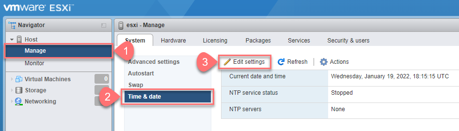
- Select “Use Network Time Protocol (enable NTP client)” and set the NTP server as dc1.pexipacademy.local (a DNS server has already been defined for the ESXi host allow the resolution this FQDN).
NOTE: There is only one internal NTP server in this lab, but you should configure multiple servers in a real environment (see section #4.1 in the lab sheet).
Ensure the "NTP service startup policy" is set to "Start and stop with host", then click Save.
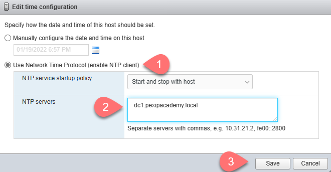
- Ensure that the NTP client service has started and if it hasn't, click Actions --> NTP service --> Start.
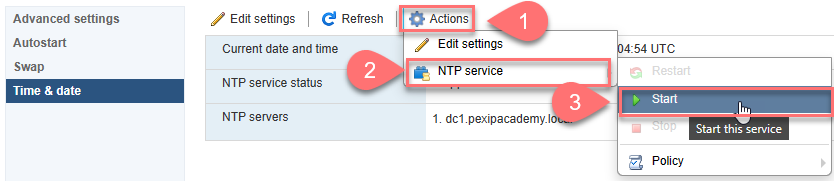
- Recheck the NTP service to ensure it is running and that the time is correct (check the time against the Jumpbox or Domain Controler time).
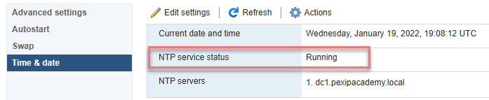
Deploying the Management Node to the ESXi host
- Before deploying the Management Node, you need to download the latest General Availability (GA) released "Generic Management Node OVA" file from our website.
NOTE: For an ESXi host, you will need to have stored this file locally. For vCentre, it is possible to deploy directly from a URL.
You can always find the latest files linked to our main Infinity platform download page at https://www.pexip.com/platform-downloads/infinity/current-release. In addition, you can find previous versions from https://dl.pexip.com/infinity/index.html. There are pre-defined bookmarks in the browsers on the Jumpbox. The file name will look something like "Pexip_Infinity_v26.2_generic_pxMgr_62420.ova"
NOTE: The upload to the ESXi host will be quicker if you download the file via the Jumpbox.
- When logged in the ESXi host using the information provided in the lab sheet section #3.
- Select Create/Register VM(you can also right (or option)
click on the host and select Create/Register VM).
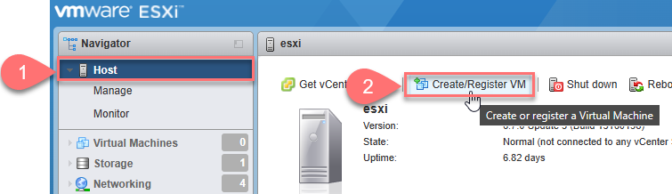
Or
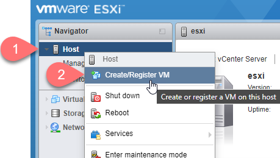
- Select Deploy a virtual machine from an OVF or OVA file, then click Next.
- Give the Management Node a name of "mgr.pexipacademy.local" (see section #4.1 in the lab sheet), then drag & drop the OVA file (or select it) so that it is shown in the selection box, then click Next.
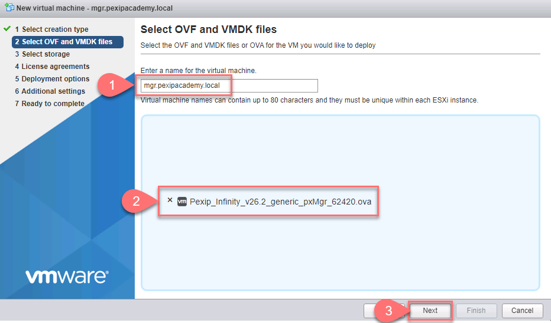
- Click Next in the Select Storage page.
- Click the I agree button on the EULA page and click Next.
NOTE: This shows up far neater when deploying the Management Node using vCentre.
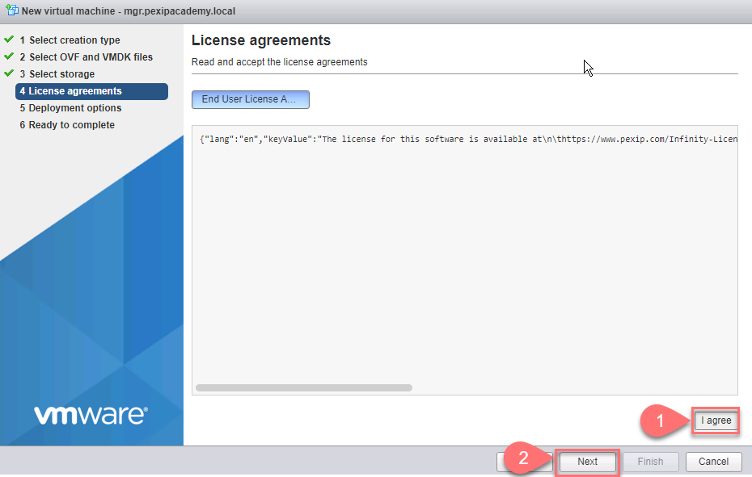
- For the Deployment options, you should ensure the Disk provisioning is set to Thick and the Network mapping to the VM Network LAN (see lab sheet section #4.1), then click Next.
NOTE: ALL nodes should be thick provisioned.
NOTE: Different nodes may need their network interfaces assigned to different VM Networks (VLAN IDs)
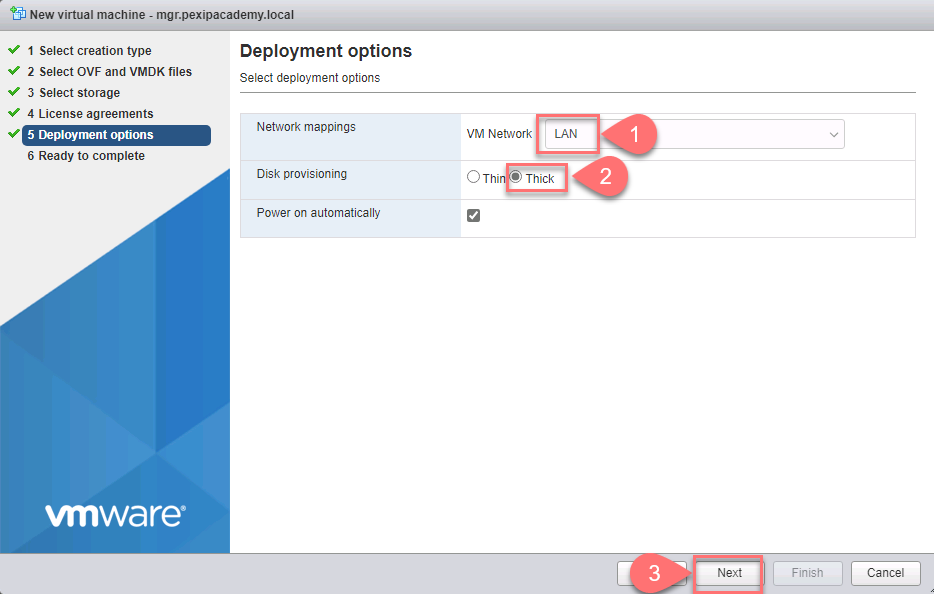
- Review the summary and click Finish. When the node has deployed, is will power on automatically.
NOTE: in vCentre, this dosn't happen automatically.
- Click the Virtual Machines selector, then the Management Node VM.
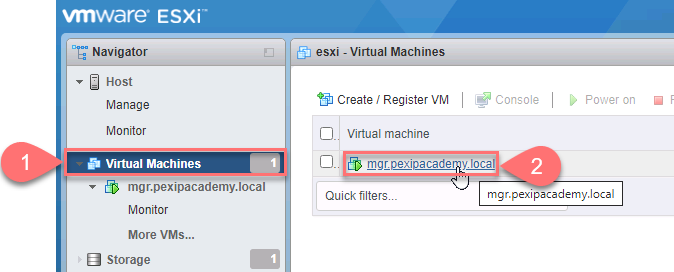
- When the Management Node has booted, you should see a thumbnail image of the console screen. Click on the thumbnail image to open a console session to the Management Node using the ESXi host's GUI.
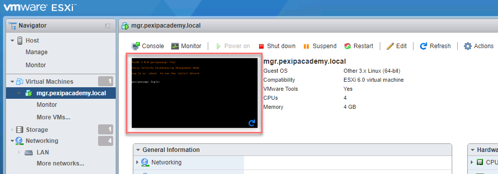
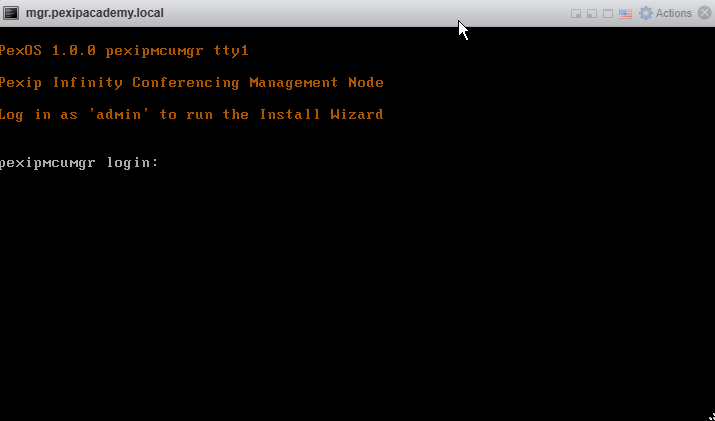
Initial configuration of the Management Node
Until now, the deployment of the Management Node is specific to the hypervisor you are using. All hypervisors have different requirements and instructions, be they OnPrem or cloud-based infrastructure. However, once the Management Node has booted, its initial and subsequent configuration is universal.
You might wish to rewatch this video from the installation module regarding the Management Node installation wizard.
- Log in with username admin and then set and verify the password to Pexip123! (this known consistent password allows trainers to help).
- Re-enter the password once more to start the Management Node Installation wizard, then follow the
steps via the console. If you make a mistake, press Ctrl+C to restart the wizard.
NOTE: in v27, a network administrator can configure DHCP to offer default values for hostname, domain name, DNS and NTP servers.
- The IP address for the Management Node is 10.200.180.10 (see lab data sheet section
#4.1).
- The network mask is 255.255.255.0 (you can just press Enter).
- The gateway IP address is 10.200.180.1.
- The hostname is the first part of the Management Node FQDN, like mgr.pexipacademy.local.
- The domain
suffix is the last part, like mgr.pexipacademy.local.
- The DNS server is 10.200.180.2.
NOTE: In this lab, there is only one DNS server; however, in an actual deployment, you should add multiple DNS servers for redundancy.
NOTE: Up to v26, multiple DNS servers are added using a space as a delimiter. In v27, you are now able to use commas.
- The NTP server is dc1.pexipacademy.local.
NOTE: In this lab, there is only one NTP server; however, in an actual deployment, you should add multiple NTP servers for redundancy.
NOTE: Up to v26, multiple NTP servers are added using a space as a delimiter. In v27, you are now able to use commas.
- Set the web UI credentials to admin / Pexip123! – Please keep the password as this so we can help if required.
NOTE: in an actual deployment the OS password and web UI password will likely differ.
REALLY IMPORTANT NOTE: The SSH Password is the “Key to your Kingdom” – if you lose or forget this, you may have to manually redeploy the entire system in the future.
- Disable (by typing "n") incident reporting and usage statistics.
NOTE: We highly advise that you enable both these settings for actual deployments.
NOTE: For additional help with incident reporting, when the Management Node is up, you should set up the Contact email address within the Global Settings so that Pexip can contact you for further information (also see below).
When the installation wizard is complete, the Management Node will restart, and you will be able to reach it using your browser via the assigned URL/IP. The first time the Management Node powers up, it can take about 5 minutes before the web service begins responding and displaying the web interface. If you connect to the node using the Jumpbox, you will have to accept the security warning shown in the browser as the Management Node only has a self-signed certificate applied after creation. We will fix that in a later lab exercise.
NOTE: Using the link in the left panel masks this certificate problem as the connection routes via a reverse proxy. We still need to add a trusted TLS certificate to the Management Node.
NOTE: if the Management Node goes into a boot loop, likely, it can’t reach a specific NTP server, so it will be unable to set the correct time. If this happens, check the network (VLAN) assigned to the vNIC and that all the details entered in the installation wizard are correct.
Once the Management Node is up, log in and double-check the Reporting section in the Global settings. You should have disabled Incident Reporting for this lab from the steps above, but this may have been overlooked.
- Navigate to Platform Settings --> Global Settings --> Reporting and ensure that the Enable incident reporting option is unchecked.
IMPORTANT NOTE: in your own (or your customers) Infinity deployments, you would likely want to have this option enabled as it allows Pexip to provide proactive support for your deployment.
- Fill in the Contact email address field, which should point to a distribution email list, in this case:
"Contact email address" = traininglab@pexip.com
Further configuration of the system settings and Management Node details
At this point, the initial configuration of the Management Node is complete. However, you may wish to re-watch the following videos that outline other System Settings (such as adding further DNS and NTP servers) and additional configurations you may want to apply to a Management Node.